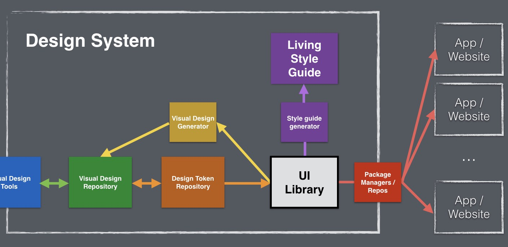

Rendszer célja
A rendszer célja, hogy a felhasználóknak egy egyszerűen használható és barátságos felületet biztosítsunk élményeik és gondolataik megosztására. Lehetőséget biztosítunk az egyes postok lájkolására is ezzel a felhasználók kifejezhetik tetszésüket az adott poszt iránt. Fontos szempont, hogy az applikáció használata egyszerűen elsajátítható legyen. Széleskörben elérhető legyen a velhasználók számára és könnyen egy adott post felhívja a figyelmet az adott információkra: Ki / Mikor tette közzé, illetve az adott posztra kapott lájkok száma. Fontos szem előtt tartanunk a felhazsnálók érdekeit, így felkínáljuk az accountok felfüggesztésének, törlésének lehetőségét is. Ezt a folyamatot egy kérdőív előzi meg amelybena felhasználó kifejti a felfüggesztés / türlés miértjét.
Az applikáció elkészítéséhez a következő software-ek felhasználását tűztük ki célul:
- Laravel (A rendszer alapját képző framework)
- Trello (A csapatmunka megkönnyítése céljából project management system bevonása mellett döntöttünk)
- Github (A project a githubon kerül tárolásra)
- Maga a project PHP nyelven íródik
Project terv
Project dolgozók: Molnár Dávid, Szalai Márk, Bárdos Bálint Project vezető: Molnár Dávid Munkák: Molnár Dávid, Szalai Márk, Bárdos Bálint Tervezet: Követelmény Specifikáció, Funkcionális Specifikáció, Rendszer Dizájn, Adattárolás, Tesztek
Üzleti folyamat model
Különféle üzleti folyamat létezik, ezeket általában egy diagramm vagy képen szokták felvázolni. Vannak standart eljárások, olyan weboldalakhoz amihez nem kell különféle technológia. Viszont van amihez kell, így azok teljesen más üzleti modelt igényelnek. A mi üzleti folyamat modellünk az alábbi képen érhető el.
Funkcionális terv
Rendszerszereplők:
- Admin
- User
Rendszerhasználati esetek és lefutásaik
- Admin:
- Beléphet bármilyen userként teljes hozzáférése van a rendszerhez
- A felhasználói adatokat látják, változtathatják (Jelszó titkosított)
- Felhasználó hozzáadására, felfüggesztésére, törlésére van lehetőségük
- Üzenetküldés bárkinek vagy globálisan
- Felhasználói adatok módosítása
- Postok létrehozása, törlése, módosítása
- User kiléptetése a szerverről
- User:
- Saját adatlap szerkesztése
- Képes üzenetet küldeni más felhasználóknak
- Postok létrehozása, törlése, módosítása
- Közös hírportál megtekintése
Menü hierarchiák
- Bejelentkezés:
- Bejelentkezés
- Regisztráció
- Fő menü
- Home
- Post létrehozás
- Profil megtekintés
- Top Postok
- Kijelentkezés
Postolás
- Létrehozás
- törlés
- módosítás
Követelmények
Funkcionális követelmények: Könnyű használhatóság Optimalizálás különböző böngészőkre Optimalizálás telefonos böngészőkre Információk gyűjtése a hírekhez Hírek visszanézése, visszaolvasása Nem-funkcionális követelmények: Az oldal nem tartalmazhat erőszakos tartalmakat Semmiféle felnőtt, rasszista illetve törvényellenes tartalom nem elfogadható
Physical environment
Mivel a projectünk egy hírportál lesz, ami maga egy weboldal így bármelyik böngészőn keresztül elérthető. Ilyen böngésző például a Firefox, Chrome, Opera vagy akár azt Edge. De igazából bármelyik böngészőn keresztül elérhető a weboldalunk. Weboldalunk az úgynevezett URL címen keresztül könnyen elérhető, de az egyszerűség kedvéért egy Google kereső is segítségünkre lehet. Könnyebb, egyszerűbb mint egy URL cím megjegyzése. Weboldalunk mint minden weboldal PHP alapon nyugszik illetve adatbázist használunk mellé. Adatmentések illetve felhasználó autentikációk is futni fognak a portálunkon.
Architekturális terv
BackEnd: PHP adatbázis kapcsolattal Változások kezelése: Az oldal kinézete a mai trendek szerint időnként változni fog FrontEnd: HTML, CSS, JavaScript Rendszer: Funkciók pl: like, dislike, comment tervben vannak
Implementációs terv
Backend
Backend részen a kiszolgáló egy php-ban készült REST szolgáltatás lesz.
Ez csatlakozik egy php myadminos szerver oldali adatbázishoz, ahonnan eljárások segítségével képes lesz adatokat lekérni, és felvinni,
valamint képes továbbküldeni, és fogadni a kliens/kliensek által szolgáltatott adatokat.
Metódusai:
- Regisztráció
- Login
- Logout
- Jelszóváltoztatás
- Saját post lekérdezése
- Összes post lekérdezése
- Postokfeltöltése
- Minden user lekérdezése (csak adminnak)
Webes felület:
A webes felületet akár a backendet HTML / PHP alapon a Laravel framework által kínált lehetőségek segítségével fogjuk megoldani, az úgynevezett blade templating felhasználásával, melyet a framework nativan tartalmaz. Ennek segítségével egyszerűen alkalmazkodhatunk a backend rendszeres adat változásaira.
Tesztterv
A tesztelések célja a rendszer és komponensei funkcionalitásának teljes vizsgálata, ellenőrzése, a rendszer által megvalósított üzleti szolgáltatások verifikálása.
Tesztelési eljárások
Unit teszt:
Ahol csak lehetséges, szükséges már a fejlesztési idő alatt is tesztelni, hogy a metódusok megfelelően működnek-e.
Ezért a metódusok megfelelő működésének biztosítására mindegyikhez írni kell Unit teszteket, a minnél nagyobb kódlefedettséget szem előtt tartva.
A metódusok akkor vannak kész, ha a tesztesetek hiba nélkül lefutnak az egyes metódusokon.
Alfa teszt:
A teszt elsődleges célja: az eddig meglévő funkcióknak a különböző böngészőkkel, és androidokkal való kompatibilitásának tesztelése.
A tesztet a fejlesztők végzik.
Az eljárás sikeres, ha különböző böngészőkben és különböző androidokon is megfelelően működnek a különböző funkciók.
A teszt időtartama egy hét.
Beta teszt:
Ezt a tesztet nem a fejlesztők végzik.
- Tesztelendő böngészők: Opera, Firefox, Google Chrome, Safari
- Tesztelendő kijelzőméretek: 1280x720 (minimum), 1366x768, 1920x1080
A teszt időtartama egy hét.
A tesztelés alatt a tesztelő felhasználók visszajelzéseket küldhetnek a fejlesztőknek, probléma/hiba felmerülése esetén.
Ha hiba lép fel, a fejlesztők kijavítják a lehető leghamarabb. Sok hiba esetén a tesztelés ideje elhúzódhat plusz egy héttel.
Telepítési terv
Hírportálunk elkészülte után a telepítési terv a következő: - Tárhely vásárlása illetve bérlése. - Domain név váráslás, a könnyebb elérhetőség szempontjából. - Fájlok illetve egyéb komponensek feltöltése a bérelt tárhelyre. - Weboldal tesztelése illetve megfigyelése. - Sikeres, hibamentes tesztelés után éles beüzemelés. - Sikeres beüzemelés után statisztika illetve visszajelzések gyűjtése. - Felmerülő fejlesztési lehetőségek szem előtt tartása. - Ötletek, tippek gyűjtése az látogatók visszajelzéséből. - Mai technológiák nyomonkövetése esetenként beintegrálása a hírpotálunkba.
Karbantartási terv
- Corrective Maintenance: A felhasználók által felfedezett és "user reportban" elküldött hibák kijavítása.
- Adaptive Maintenance: A program naprakészen tartása és finomrahangolása.
- Perfective Maintenance: A szoftver hosszútávú használata érdekében végzett módosítások, új funkciók, a szoftver teljesítményének és működési megbízhatóságának javítása.
- Preventive Maintenance: Olyan problémák elhárítása, amelyek még nem tűnnek fontosnak, de később komoly problémákat okozhatnak.